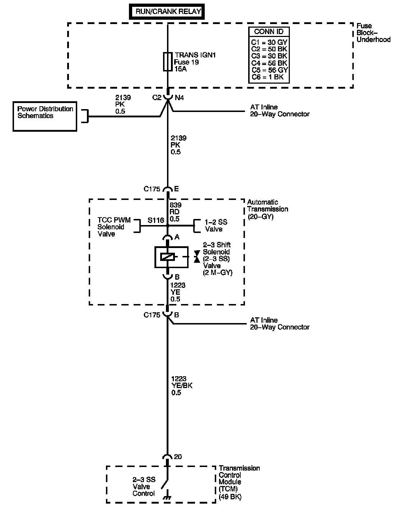

4L80-E / 4L85-E Automatic Transmission
DTC P0976

Circuit Description
The 2-3 shift solenoid (SS) valve controls the fluid flow acting on the 2-3 shift valves. The solenoid is a normally-open exhaust valve. With the 1-2 SS valve, the 2-3 SS valve allows 4 different shifting combinations. The solenoid attaches to the control valve body within the transmission. The 2-3 SS valve receives voltage through the ignition voltage circuit. The transmission control module (TCM) controls the solenoid by providing the ground path on the 2-3 SS valve control circuit.
When the TCM detects a continuous open, short to ground, in the 2-3 SS valve control circuit, then DTC P0976 sets. DTC P0976 is a type A DTC.
DTC Descriptor
This diagnostic procedure supports the following DTC:
DTC P0976 2-3 Shift Solenoid (SS) Control Circuit Low Voltage
Conditions for Running the DTC
^ The engine run time is 5 seconds or greater.
^ The system voltage is between 8-18 volts.
Conditions for Setting the DTC
The TCM detects an open or short to ground in the 2-3 SS valve circuit for 4.4 seconds.
Action Taken When the DTC Sets
^ The TCM requests the engine control module (ECM) to illuminate the malfunction indicator lamp (MIL).
^ The TCM commands a soft landing to 2nd gear.
^ The TCC commands maximum line pressure.
^ The TCM freezes transmission adaptive functions.
^ The ECM records the operating conditions when the Conditions for Setting the DTC are met. The ECM stores this information as Freeze Frame and Failure Records.
^ The TCM records the operating conditions when the Conditions for Setting the DTC are met. The TCM stores this information as Failure Records.
^ The TCM stores DTC P0976 in TCM history.
Conditions for Clearing the MIL/DTC
^ The ECM turns OFF the MIL after the third consecutive drive trip in which the TCM does not send a MIL illumination request.
^ A scan tool can clear the MIL/DTC.
^ The TCM clears the DTC from TCM history if the vehicle completes 40 warm-up cycles without an emission related diagnostic fault occurring.
^ The TCM cancels the default actions when the ignition is OFF long enough in order to power down the TCM.
Test Description
The number below refers to the step number on the diagnostic table.
2. A short to ground in the ignition 1 voltage circuit to the solenoid ahead of the splice would open the fuse and set DTCs for other solenoids on the same circuit. An open in the same circuit would not open the fuse but, would set the other DTCs.